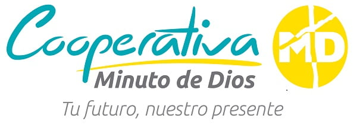

Diplomado en Inteligencia Artificial Aplicada a la Educación
Domina las herramientas y metodologías de inteligencia artificial generativa más demandadas por el sector educativo. Optimiza tus tiempos, personaliza el aprendizaje y diseña experiencias didácticas innovadoras.
La educación está viviendo su transformación más radical en décadas. Los docentes que dominan la inteligencia artificial no solo automatizan tareas administrativas complejas, sino que liberan tiempo valioso para conectar humanamente con sus estudiantes y diseñar clases personalizadas que potencian el aprendizaje exponencial.
En este diplomado práctico propuesto por el Politécnico Minuto de Dios, adquirirás habilidades inmediatas para el aula utilizando modelos lingüísticos, generadores de contenido multimedia y asistentes de evaluación inteligentes.
Iniciar InscripciónUn diplomado diseñado bajo metodologías prácticas que transformarán tu ejercicio profesional de inmediato.
No nos quedamos en la teoría. Cada sesión es un taller interactivo donde creas recursos reales para tus clases de forma inmediata.
Acceso a nuestra aula virtual premium las 24 horas del día. Avanza a tu propio ritmo con el acompañamiento de tutores expertos.
Accede a cómodas opciones de pago y financiación preferencial a través de la Cooperativa Minuto de Dios para facilitar tu matrícula.
Obtén tu diploma emitido por la Fundación Politécnico Minuto de Dios, entidad líder en educación práctica y tecnológica en el país.
Conoce los 4 módulos interactivos que componen este programa académico de alto nivel.
Una inmersión profunda para comprender la naturaleza de la inteligencia artificial, los modelos de lenguaje a gran escala (LLM) y cómo se insertan en la historia de la tecnología escolar y las teorías del aprendizaje.
Módulo práctico enfocado en dominar herramientas que optimizan la gestión de las clases y reducen la carga administrativa y de planeación del docente.
Aprende a crear material interactivo y audiovisual educativo de impacto sin necesidad de poseer conocimientos profundos de edición audiovisual.
Estudio del impacto ético, plagio, propiedad intelectual y las directrices globales sobre el uso seguro y equitativo de la IA en instituciones educativas.
Déjanos tus datos y un asesor se pondrá en contacto para contarte facilidades de pago y matrícula.
Queremos facilitarte el acceso a tu formación. Conoce las opciones de financiación directa y rápida.

Conoce las habilidades y capacidades que desarrollarás a lo largo del diplomado.
El egresado del Diplomado en Inteligencia Artificial Aplicada a la Educación será un profesional con visión estratégica y metodológica, capacitado para liderar procesos de innovación pedagógica, diseñar entornos virtuales adaptativos y automatizar la gestión didáctica. Estará en la capacidad de operar, controlar, mantener y soportar sistemas y herramientas de Inteligencia Artificial Generativa bajo criterios éticos y técnicos de alto nivel.
Dentro de sus funciones y competencias se encuentran:
Realiza tu proceso de matrícula de forma ágil y 100% digital en simples pasos.
Completa tus datos básicos en el formulario de información en la parte superior.
Un asesor institucional te llamará para resolver tus dudas y simular tu plan de pago o financiación.
Realiza el pago en línea de tu matrícula o firma la aprobación digital del crédito directo.
Recibe tus credenciales en el correo electrónico y accede al campus virtual para iniciar tu formación.
Para formalizar tu matrícula es necesario que cargues o envíes a tu asesor los siguientes soportes digitales:
¿Tienes alguna pregunta sobre el programa? Encuentra las respuestas principales aquí.